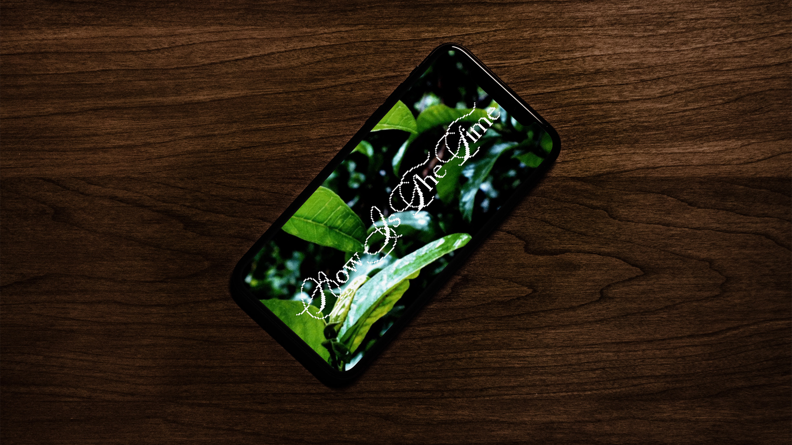
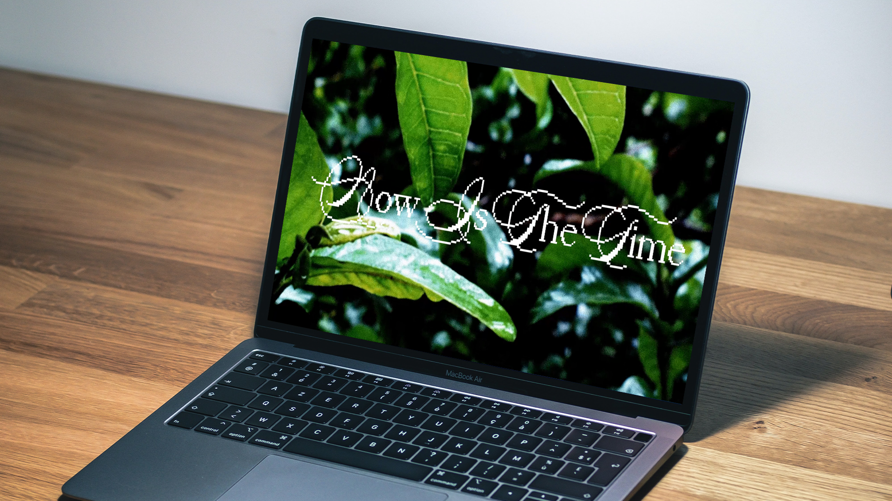

With Now Is The Time as the prompt, I felt the work should reflect some contemporary issue while simultaneously serving as a call to action. I believe our climate crisis to be one of the most existential issues of our time, and I wanted to illicit the dread and damage I perceive when confronted with that reality. The strategic approach I took was to emphasize the increase and decrease of biomatter and anthropogenic mass recorded during the year 2021. I chose to have the statistics increase by single digits to punctuate how unfathomable something of that magnitude is. Regarding imagery, I chose to incorporate granularity to comment on the theme of deterioration. That is reflected in the lo-fi effect of the background sound as well, of which I slowed down to exaggerate the somber tone it brings. What I hope to communicate is not only the destruction of the planet but also to remind the viewer of the dependency and kinship that's intrinsic in the relationship between every living being on Earth. If the audience feels encouraged to change their lifestyle, to whatever degree, then I'll feel the piece is successful.
iPhone
As almost everyone has access to an iPhone or smartphone, it's the best platform for transmission. People have immediate acess to whatever site or platform the video exists on, and have the immediate ability to share it with others. As the intention with all climate activists is to inform and encourage as many people as possible, this is one of the best routes to accomplish that.

Laptop
While a laptop offers much of the same capabilities as a smarphone, I chose to display my video on this device because of how it inherently prompts people to research what they have read / watched. That is a secondary goal of the video, to encourage people to research the theme and to continue that practice of self-initiated learning.

Mega Screen
This last screen I chose because of how it reflects significance of the content. Displaying a video—or any content for that metter—on a billboard screen reminiscent of Times Square ascribes it a feeling of monumentality. It demands the viewer to stand at the screen, staring up at it with full attention. The adverse effect to using a billboard is that after people have seen it once or twice, it is disregarded as background noise.